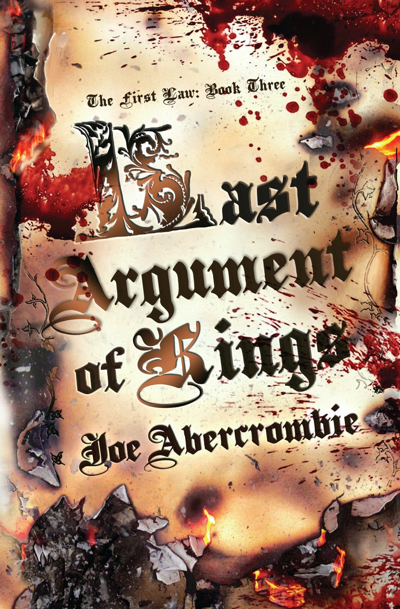

"Last Argument of Kings"
- Read on 2023-05-11
- Rating: ️️️️️
- Format: 🎧 (27 hours 4 minutes)
A great third/finel book. Plenty of resolution, but not all loose ends were tied up. And of those resolutions, some were good, and some were bad. Joe Abercrombie has a nack for detailed descriptions - to his credit and detriment. One of the main storylines follows somebody who tortures others, seeking answers in the name of the law. The accompanying descriptions are... not enjoyable, but sure are vivid. Those, among some other scenes (some explicit) I could have skipped the details, despite how important the scenes may have been to the story. This being the conclusion to this trilogy, I feel like there were lots of threaded storylines throughout the series - returning characters and elements. As such, it was rewarding to have read them close together. I also enjoyed that not all of the described relationships between the main characters were necessarily positive, which felt more realistic than everybody acting like everything was peachy.
These books aren't for the light-hearted fantasy reader, and I don't really see myself revisiting. Nor would I recommend them to most, even if you're into the somewhat usual horses/swords/castles type of fantasy novels. These are just too detailed in some of the wrong areas, no matter how I enjoyed the rest of the storytelling.
- Prior: The Little Book of Hygge
- Next: Remarkably Bright Creatures